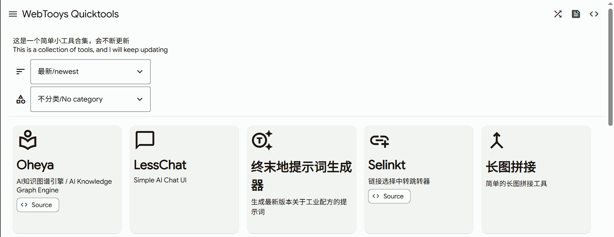
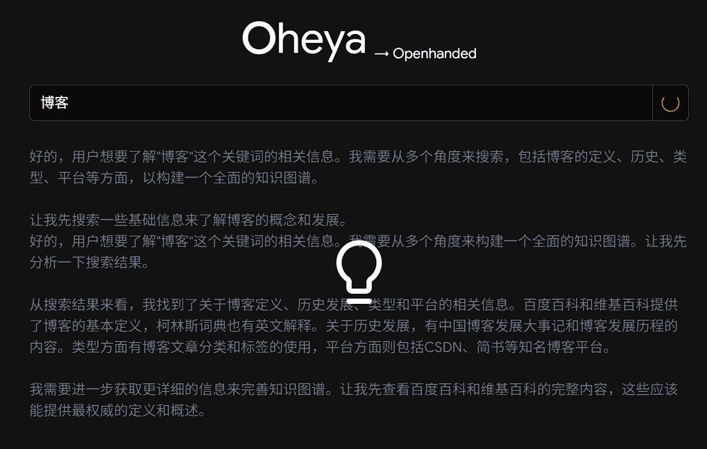
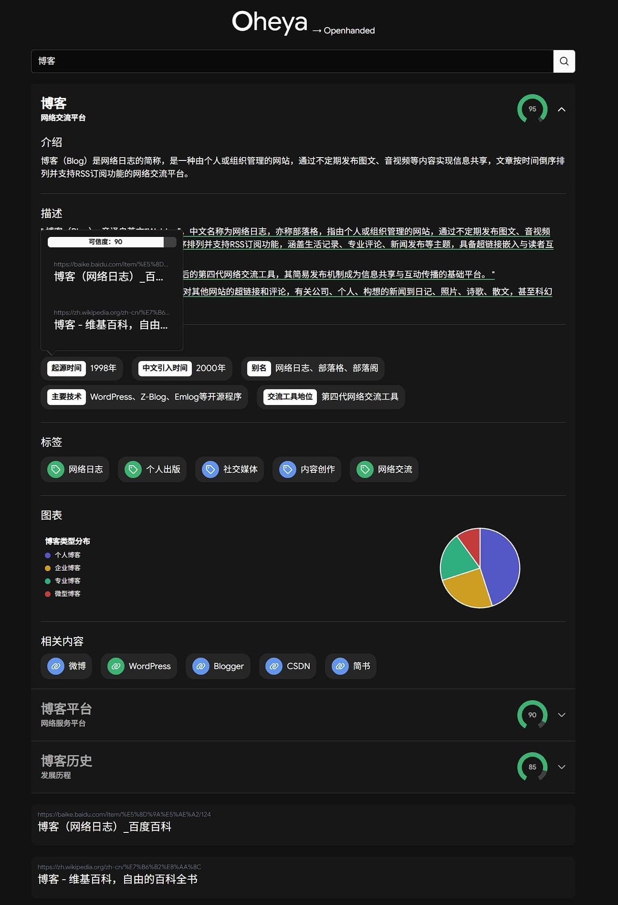
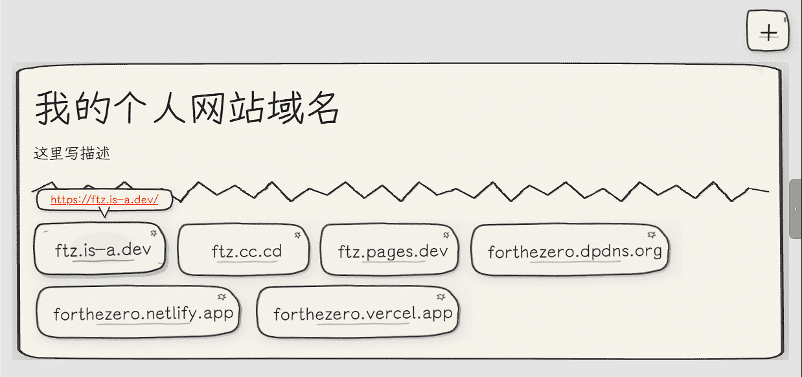
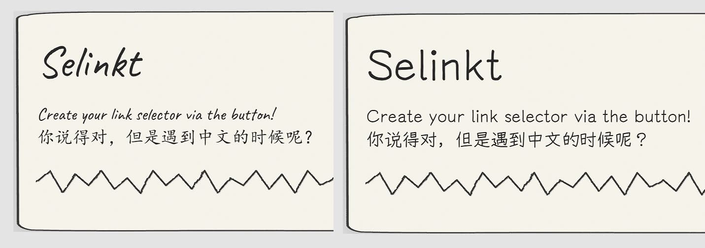
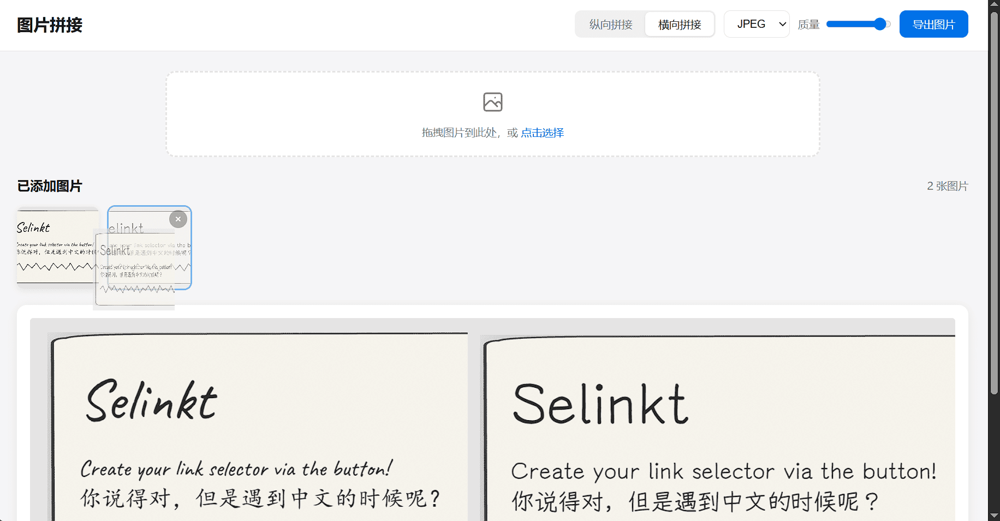
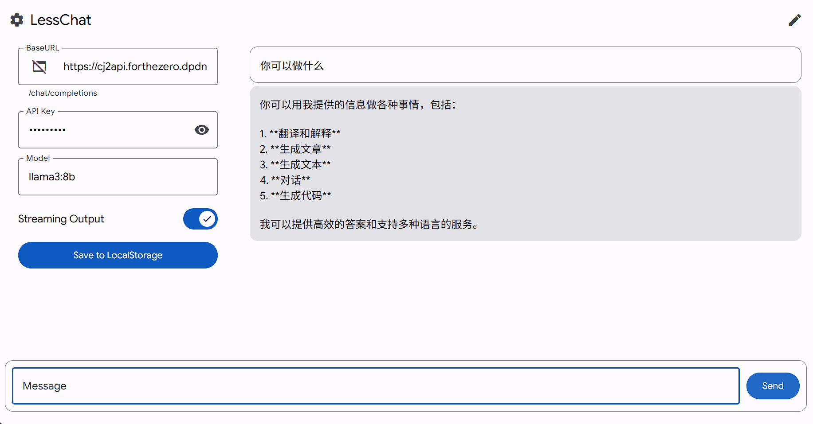
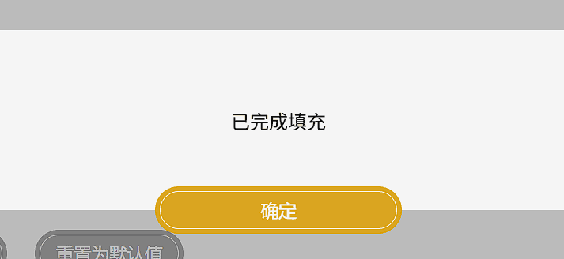
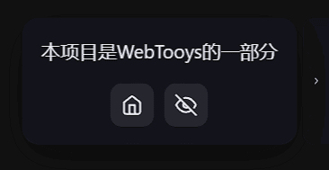

WebTooys 第四弹更新
可通过Netlify/Vercel/Cloudflare Pages
我觉得我该改改我写博客的时候重要的东西写后面的习惯了，感觉不太有人会看到后面吧，该学学倒金字塔结构，这次就不按时间顺序写了，废话少说
这次更新了5个tooys，其中主力项目是Oheya
Oheya
自然，也是有Github的，但是视频不着急，想要搞成杂谈DLC杂谈2一部分
这次用的是vue（PrimeVue+TailwindCSS），练练手，顺便用vite-plugin-pwa简单搞了搞PWA，本来还想上vapor的但是好像遇到了些问题算了
打开网页，先到设置里面填写你的API，然后往输入框中输入字符，得到结果
AI会先思考思考：

然后用流式输出一点一点地给出类似于Magi搜索引擎的思维图谱：

为多词条含引用，每个词条可以包含介绍、描述、属性、标签、图表、相关内容（其中描述、属性、标签、相关内容都是抄Magi的，不过样式倒没抄），最后面还有一个和Magi一样的普通搜索引擎结果
而这些内容，包括最后搜索结果的排序，都是由你的AI生成的
有一点要注意的是，这里有很多个搜索API提供商但是实测下来发现只有Exa不会返回搜索结果摘要（如上图）
但是我更想说的是，这个产品本身之外的事情
CORS Proxy
不难发现，在应用设置中有一个CORS Proxy设置，且模型设置中也有一个可选的CORS Proxy开关
因为，有不少模型推理API都上了CORS限制，用这个东西可以破除限制，然后就是搜索相关的API我试了一下全都要CORS我服了
你可以皇上你自己的CORS Proxy，默认放的是我自己的cors.forthezero.dpdns.org，是让AI基于cloudflare-cors-anywhere，改的，使它支持流式输出了
诞生原因
一段时间之前，我突然想起了Magi这个东西，我记得是因为版权还是什么的原因被人干没了，现在访问那公司的官网也没了，又想到现在为了训练大模型互联网上的什么资源都能被偷走，投了也很难发现，发现了也很难管，然后我就想，能不能用大模型模仿、复活一下它呢？于是就有了这个项目，根据自己的记忆和网上的资料做了出来
顺便还加了个彩蛋，标题是可以点击的，这个其实是另外一个已经死去的搜索引擎F搜在第一次复活（应该是吧）之前的标题彩蛋，点一下就能切换logo右下角的文字，都是以f开头与搜索相关的单词，还带emoji（当时AI编程还没有这么火，看到emoji还感觉有点有趣，至于现在嘛……），f搜其实没什么特点，除了这个小彩蛋，特点就只有干净了，界面完全是抄谷歌的
取名
这是我最不寻常的一个取名了，直接上日语
这个名字是怎么来的呢？其实是中国有句古话：
ai-sdk的坑
这次使用了vercel的ai-sdk方便我开发，结果还是踩了一些坑
createOpenAI还是createOpenAICompatible
一方面是模型，模型传入的是provider(model_id)，然而有两个创建provider的，一个叫createOpenAI一个叫createOpenAICompatible，两个都可以设置key和base url
我一开始用了第一个，发现有的API请求直接报错，打开请求体一看，这并不是我说熟悉的那个版本的message，换上第二个就没事了
此外这玩意有版本问题，安装ai-sdk之后已经过了一段时间，安装这个createXXX（是的这玩意要单独安装的）的时候直接不兼容，太新了我旧版本ai-sdk用不了
系统提示词
一开始我给库传入的是message，像往常一样一个system一个user，结果ai-sdk给我报错说message里面不能有system
修改也很简单，而且改之后也代码更简单了：instructions放系统提示词，prompt放用户指令
调用工具连续生成
测试的时候发现，请求一次工具就直接停止了，没有自动执行工具（明明工具都搞上了execute）
AI说要加上maxStep，我看这名字也不对，输入到VSCode中直接ts报错，我一问，AI闹里面最新版本是v4而我用的版本已经是stable v7了
又问了几下，说要用stopWhen，但是给出的参数是错误的，实际上要isLoopFinished()（要从ai库引入）
类似的AI信息之后还有fullStream已经改成了stream
流式输出，但是……
一开始我就想，怕用户等太久，搞个流式输出，但是那么一堆组件怎么流式输出呢？你json不完整啊，我便选择让它输出yaml，解析不了就忽略，而大部分时候解析都能用
直到我遇到了一个bug：Uncaught (in promise) TypeError: Cannot read properties of null (reading 'emitsOptions')，导致组件无法互动甚至无法渲染
思来想去不知道哪里出了问题，什么叫我操作了没挂载的组件，我让AI去修，修得文件面目全非我不想看了，不过我也没恢复，全保留了，但是修了又没修好啊啊啊
然后在Gemini的帮助下有了一点进展，发现可能是有些值为null又读取了里面的东西，一个一个全家上可选链或fallback，总算解决了
震动
哦齁齁齁齁齁齁齁齁齁齁齁齁~❤
其实是用手机ChatGPT和RikkaHub每输出一个token就震一下给我震爽了就加上这个功能的，线性马达就是爽~
哦齁齁齁齁齁齁齁齁齁齁齁齁~❤
实测下来在我的手机上我建议不超过50ms，因为超过这阈值振动的手感会变，小于这个值才是哒哒哒的感觉，不过建议还是优先看你的API的输出速度
其它tooys
除此之外还有一些其它的tooys：
Selinkt
一个链接选择工具，在url中通过?json或#base64构建好数据之后，一打开就是指定的链接界面了，例如：
https://tooys.pages.dev/builts/selinkt/?{"title":"我的个人网站域名","desc":"这里写描述","links":[{"name":"ftz.is-a.dev","url":"https://ftz.is-a.dev/"},{"name":"ftz.cc.cd","url":"https://ftz.cc.cd/"},{"name":"ftz.pages.dev","url":"https://ftz.pages.dev/"},{"name":"forthezero.dpdns.org","url":"https://forthezero.dpdns.org/"},{"name":"forthezero.netlify.app","url":"https://forthezero.netlify.app/"},{"name":"forthezero.vercel.app","url":"https://forthezero.vercel.app/"}],"tgb":false}
https://tooys.pages.dev/builts/selinkt/#eyJ0aXRsZSI6IuaIkeeahOS4quS6uue9keermeWfn+WQjSIsImRlc2MiOiLov5nph4zlhpnmj4/ov7AiLCJsaW5rcyI6W3sibmFtZSI6ImZ0ei5pcy1hLmRldiIsInVybCI6Imh0dHBzOi8vZnR6LmlzLWEuZGV2LyJ9LHsibmFtZSI6ImZ0ei5jYy5jZCIsInVybCI6Imh0dHBzOi8vZnR6LmNjLmNkLyJ9LHsibmFtZSI6ImZ0ei5wYWdlcy5kZXYiLCJ1cmwiOiJodHRwczovL2Z0ei5wYWdlcy5kZXYvIn0seyJuYW1lIjoiZm9ydGhlemVyby5kcGRucy5vcmciLCJ1cmwiOiJodHRwczovL2ZvcnRoZXplcm8uZHBkbnMub3JnLyJ9LHsibmFtZSI6ImZvcnRoZXplcm8ubmV0bGlmeS5hcHAiLCJ1cmwiOiJodHRwczovL2ZvcnRoZXplcm8ubmV0bGlmeS5hcHAvIn0seyJuYW1lIjoiZm9ydGhlemVyby52ZXJjZWwuYXBwIiwidXJsIjoiaHR0cHM6Ly9mb3J0aGV6ZXJvLnZlcmNlbC5hcHAvIn1dLCJ0Z2IiOmZhbHNlfQ==

取名
我很想说的一点是：这次的取名！非常有感觉！（
Selinkt由Select与Link拼合而成：
Selinkt
Sel ct
link
是我继Taple、Lofelv Vifyna等之后又一个令我满意的名字
组件库和字体
我选用了一款手绘风格的组件库，完全是因为之前在推特上刷到了这个React组件库便想着去试一试，挺有特色的
然后发现这玩意有点坑啊
- 样式直接写inline搞得我tailwindcss还得
!(!important)一下 - 很多组件改不了宽度，最多改一改input元素的宽度但是外观的宽度还是不变，所以你会看到宽屏添加链接的拿一块地方很奇怪，因为输入框组件只能是那么长的，我只能缩减输入框本体的宽度并用另一个覆盖掉那个样式边缘的
- 不好对齐
- ……
此外，组件库用的是一个叫做Caveat的字体，很可惜，这个字体并不支持中文
经过搜罗，我最终选择了霞鹜LXGW的悠哉Yozai字体，使用ZeroSeven Fonts作为CDN，选择这个字体不仅是因为它是手写体，还是因为它是霞鹜造的，几年前我刷到过霞鹜新晰黑字体的视频，发现了这么一个业余独立DIY字体爱好者，心生敬畏，你可以在我的部分项目（好像有吧）和部分视频中看到他的字体
这个字体和原本的风格并不是很像，但也有自己的风格，更重要的是有中文支持，来个对比：

（右边是改了之后的，可见辨认度高了很多，也不会有之前那样中文直接fallback到楷体的突兀感）
应用
其实已经使用了，在我主页和WebTooys放弃Github Pages之后（结尾会说到），我使用Selinkt充当导航，通过404.html重定向for-the-zero.github.io到Selinkt让用户选择链接
长图拼接
这是之前的一个小痛点，有时候我需要拼接图片，我不要有裁剪的，我不要压画质
而我手机相册的拼长图功能一次最多9张而且越拼分辨率越低
于是用AI vibe了这么个东西，可以选择横向和纵向拼接，可以排序，可以导出PNG或JPG，简单直接
前面Oheya长截图和Selint字体对比的两张图片就是用它拼接的：

LessChat
在前面asak_viewer就已经做过一个测试大模型API是否能跑通的简单页面了，不过我觉得那个太简单了，而且有CORS的时候不好搞，还得看看控制台
于是做了一个更像样的：

基本上就是一个没有历史记录存储的、不能自定义系统提示词的、没有Markdown渲染、没有任何其它什么功能呢的及其简约的ChatBot UI，所以才叫LessChat
顺便还附带了之前做的ChatJimmy2api作为一个简单的能用的api测试，随便用！还有我的CORS Proxy的第一次集成入项目中，避开CORS问题（但是像OpenCode Zen就不行，可能是检测到IP请求过多了吧，直接提示超速了）
生成终末地配方/AI提示词
这个项目处于两个原因，一个是要用，一个是UI练手
为什么要用呢？那段时间沉迷于终末地的工业集成（等到我写这篇博客的时候以及没什么热情了），我想要在学校用格子本做终末地蓝图，规划好画好带回家直接拼装（游戏里的物流桥太不直观了，还得是手画的十字交叉看得直观）
结果就是：三倍满速致粉、三倍满速致粉 侧、三倍满速致粉 侧 镜像、满速高谷、满速中谷、三倍满速息壤、50主核心、满速紫药的蓝图（第一个链接的视频里面有说怎么用这玩意）
至于UI练手：你可以看到我在一些地方使用了终末地的样式
首先是开屏加载动画，不完全模仿，包含一个非常爽的向右展开，进度条改成了无确定值的，右边logo改成了简单的一个Loading，而且进度条是反复改变div元素高度和距离顶部的高度实现的，做好之后才想起来为什么不是150vh从屏幕外面上方滑动到屏幕外面下方呢，想了想算了不改了
（算了不截图了你们自己打开看吧）
还有按钮和对话框的拙劣模仿，主要是想还原面板从右到左裁切填充（目测游戏里就是这样的吧）

默认数据来源于endfield-calc/factoriolab，若数据没有更新就找他，并使用JSDMirror获取数据，填充到Monoca编辑器里面的Markdown模板里面，可以导出到Markdown或docx
小导航
可以发现，现在每个项目的页面右边都有一个小东西，打开之后成这样：

因为我认为现在WebTooys各个项目过于独立没有联系，需要一个侵入性弱的东西导航到首页，就有了这个，是vibe出来的，用lit写的Web Component组件以便隔离样式
点击隐藏按钮就能隐藏掉这个东西了，用的是cookies存储，一个月过期，故意的
弃用Github Pages
由于GH Pages太慢了，域名还长，不好用，便弃用了，包括我的个人网站，反正现在域名也太多了
主页由于历史原因就用404.html重定向到Selinkt
WebTooys直接放弃直接关闭，反正没什么人访问，顺便把GH Pages关掉把仓库改成新的名字
依旧没什么好结尾的，形式上写一句